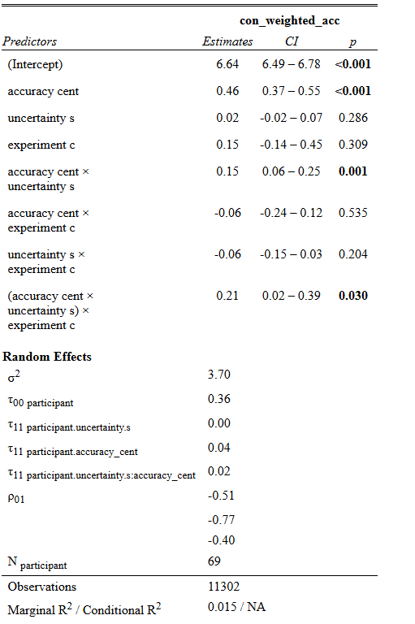
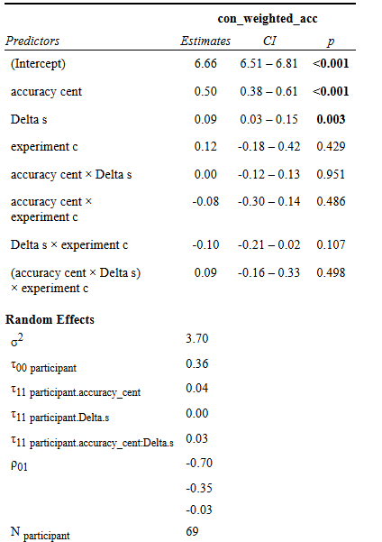
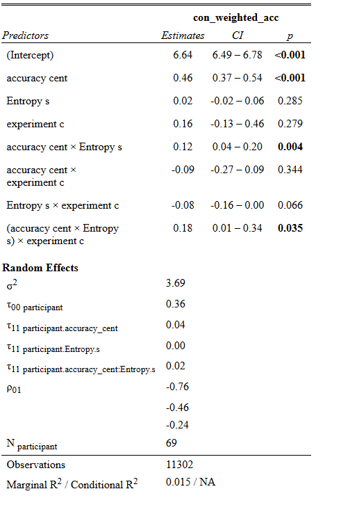

[[1]]
[1] "dplyr" "stats" "graphics" "grDevices" "utils" "datasets"
[7] "methods" "base"
[[2]]
[1] "ggplot2" "dplyr" "stats" "graphics" "grDevices" "utils"
[7] "datasets" "methods" "base"
[[3]]
[1] "tidyr" "ggplot2" "dplyr" "stats" "graphics" "grDevices"
[7] "utils" "datasets" "methods" "base"
[[4]]
[1] "lme4" "Matrix" "tidyr" "ggplot2" "dplyr" "stats"
[7] "graphics" "grDevices" "utils" "datasets" "methods" "base"
[[5]]
[1] "car" "carData" "lme4" "Matrix" "tidyr" "ggplot2"
[7] "dplyr" "stats" "graphics" "grDevices" "utils" "datasets"
[13] "methods" "base"
[[6]]
[1] "sjPlot" "car" "carData" "lme4" "Matrix" "tidyr"
[7] "ggplot2" "dplyr" "stats" "graphics" "grDevices" "utils"
[13] "datasets" "methods" "base"
[[7]]
[1] "Rmisc" "plyr" "lattice" "sjPlot" "car" "carData"
[7] "lme4" "Matrix" "tidyr" "ggplot2" "dplyr" "stats"
[13] "graphics" "grDevices" "utils" "datasets" "methods" "base"
[[8]]
[1] "patchwork" "Rmisc" "plyr" "lattice" "sjPlot" "car"
[7] "carData" "lme4" "Matrix" "tidyr" "ggplot2" "dplyr"
[13] "stats" "graphics" "grDevices" "utils" "datasets" "methods"
[19] "base"
[[9]]
[1] "lubridate" "forcats" "stringr" "purrr" "readr" "tibble"
[7] "tidyverse" "patchwork" "Rmisc" "plyr" "lattice" "sjPlot"
[13] "car" "carData" "lme4" "Matrix" "tidyr" "ggplot2"
[19] "dplyr" "stats" "graphics" "grDevices" "utils" "datasets"
[25] "methods" "base"
[[10]]
[1] "ggeffects" "lubridate" "forcats" "stringr" "purrr" "readr"
[7] "tibble" "tidyverse" "patchwork" "Rmisc" "plyr" "lattice"
[13] "sjPlot" "car" "carData" "lme4" "Matrix" "tidyr"
[19] "ggplot2" "dplyr" "stats" "graphics" "grDevices" "utils"
[25] "datasets" "methods" "base" PREMCE analysis - Effect of computationally-derived variables on memory
This document contains the analyses of the model-derived variables for PREMCE-computational for both the behavioral and the fMRI data combined
RL models
Several reinforcement learning models were fitted to the data using hierarchical bayesian estimation.
The model differed depending on the following factors:
- Choice-dependent vs Observational models.
For the choice-dependent models , the categories were updated based on the choice made by the participant.
For single-update models (SU), only the category chosen by the participant is updated:
\[ {V}_{t+1}^{c,m}= {V}_t^{c,m} + {\alpha}{\delta},\]
where \({V}_{t+1}^{c,m}\) represents the expected value at the next trial for category c and monster m. The prediction error \(\delta\) is given by:
\[{\delta} = {r}_t^c - {V}_t^{c,m},\]
RL models
In choice- dependent models, the prediction error is defined as the following:
\[\delta_t = \begin{cases} 1 - {V}_t^{c,m} \ if c_{chosen_t} = c_t \\ 0 - {V}_t^{c,m} \ otherwise \end{cases}\]
For the dual-update models (DU), the unchosen category is also updated.
RL models
By contrast, the observational models (also called IC), were updated depending on the category of the object that is presented on every trial. Accordingly, the reward \(r_t^c\) is defined as the following:
\[r_t^c = \begin{cases} 1\ if \ c = c_{object_t} \\ 0 \ otherwise \end{cases}\]
The model assumes that individuals are not only increasing the value of a given category after observing an outcome, but they will also decrease the values of the categories that have not been presented on that trial.
- Single or double learning rate.
The models estimated either one learning rate across all the trials, or differentiate between a learning rate for the chosen vs unchosen category (for the choice-dependent models) or the observed vs unobserved category (for the observational models).
Model comparison
A win-stay-lose-shift (WSLS) model was also fitted as a baseline model for comparison
WAIC (widely Applicable Information Criterion) is used to approximate cross-validation with the loo package. The package also estimates the expected log predictive density, given the data, leaving one sample out (elpd_loo). The higher the elpd_loo (and the lower the WAIC), the better the model. THis table shows that the observational model with 2 learning rates (waic_fit_hBayes_RW_IC_2alpha_beta) slightly outperform the observational model with only one learning rate (waic_fit_hBayes_RW_IC_alpha_beta)
Model comparison
| Model Name | elpd_diff | se_diff | waic |
|---|---|---|---|
| RW_IC_2alpha_beta | 0.0 | 0.0 | 22317.8 |
| RW_IC_alpha_beta | -43.2 | 26.8 | 22404.2 |
| RW_SU_alphapos_alphaneg_beta | -1432.8 | 185.4 | 25183.5 |
| RW_SU_alpha_beta | -2191.5 | 310.8 | 26700.7 |
| RW_DU_alpha_beta | -2660.2 | 204.1 | 27638.2 |
| WSLS | -6682.1 | 515.1 | 35682.0 |
Model comparison
This result is similar if we use stacking, which computes the difference between the loo-predicted and the actual data, and assign a weight to each model. The higher the weight, the smaller the error between the predicted and actual data.
Method: stacking
| Model Name | weight |
|---|---|
| hBayes_RW_DU_alpha_beta | 0.000 |
| hBayes_RW_IC_alpha_beta | 0.328 |
| hBayes_RW_IC_2alpha_beta | 0.637 |
| hBayes_RW_SU_alpha_beta | 0.000 |
| hBayes_RW_SU_alphapos_alphaneg_beta | 0.035 |
| hBayes_WSLS | 0.000 |
Parameter estimation
Parameters of best fit are estimated after the winning model is fit to the data.
These is the distribution of the estimated parameters
Parameter estimation
This graph shows the expected value for each category, in a participant from the behavioral sample
Paremeter estimation
And this is an example of a participant from the fMRI sample. Note that there is additional change point in the paradigm
Computationally-derived variables
Two variables were derived from the best-fitting model:
- Uncertainty:
\[\text{Uncertainty}_t = \frac{1}{\operatorname{var}(V^{1}_t, V^{2}_t, V^{3}_t, V^{4}_t)}\] - Prediction error Prediction error is defines as:
- Entropy (H):
\[H(S_t) = -\sum_{i=1}^4 (P^{m=i}_t)log(P^{m=i}_t)\] Both quantities are at their heighest when the distribution of the expected values is more uniform.
Computationally-derived variables
Both quantities were scaled and centered within- participants.
Computationally-derived variables
- Uncertainty , PE , entropy, across trials
Computationally-derived variables
Uncertainty was higher after the CP, for all participants but one.
Entropy and PE were higher after the change point for all participants.
The two columns indicate the experiment (1 = behavioral, 2 = fMRI)
Memory - Uncertainty
The effect of these variables on memory was then analyzed. There was a three-way interaction between accuracy, uncertainty, and experiment:

Memory - Uncertainty
The plot shows that the interaction between prediction accuracy and uncertainty is stronger in the fMRI study (experiment_c = 0.5)
Memory - Prediction error
The effect of prediction error was then analyzed
There was a there was a main effect of PE:

Memory and prediction error8
As we can see from the graph, the effect was strong in the behavioral but not in the fmri study
PE and uncertainty
In a similar direction, there was an interaction between accuracy, entropy and experiment:
